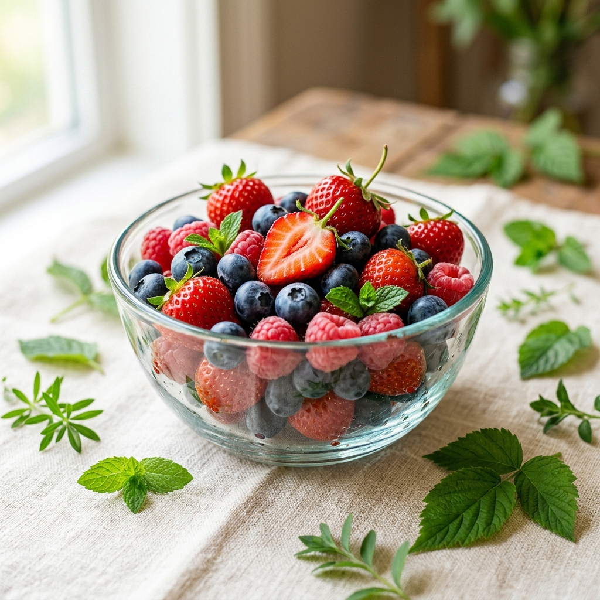

Search Culinary Ideas
Browse organic breakfast rolls, raw fruit parfaits, or salad dressings.
Meal Categories
Wild Berry Morning Bowl
A nutritious yogurt parfait base filled with raw organic blueberries, strawberries, and walnut slivers, topped with pure local clover honey. Balanced for high vitamin C and energy boost.

Berry Parfait Cup
Breakfast • 10mA simple, antioxidant-packed bowl of mixed berries, Greek yogurt, and raw walnuts.
View cooking stepsImmune Shield Juice
Juices & Shakes • 5mA nutrient-dense blend of cold-pressed orange, celery, and ginger juices.
View cooking stepsSourdough Garlic Toast
Organic Baking • 15mCrusty sourdough bread toasts rubbed with fresh garlic and extra virgin olive oil.
View cooking stepsDetailed Chef Handbooks
Read or print our chemical-free kitchen handbooks in high resolution.
{kind=link}
{kind=link}
Interactive Ingredient Shopping
Check the items below that you need for your morning parfait, and add them directly to your checkout cart.
Organic Calorie Balance Calculator
Select your breakfast components to estimate total calories and vitamin C levels.
Nutritional Estimate
Estimated Energy: 280 Calories
Vitamin C Content: 150% RDI